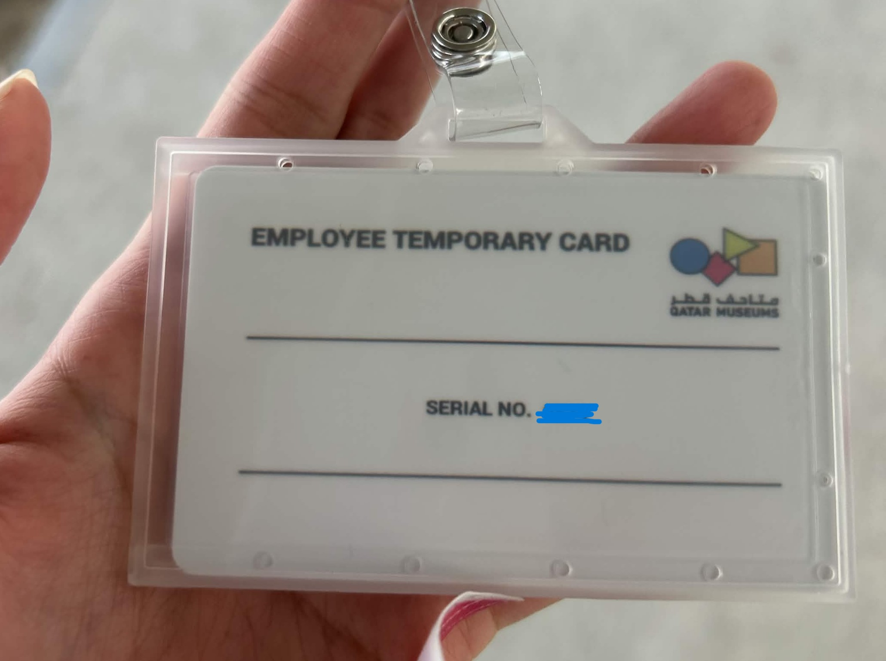
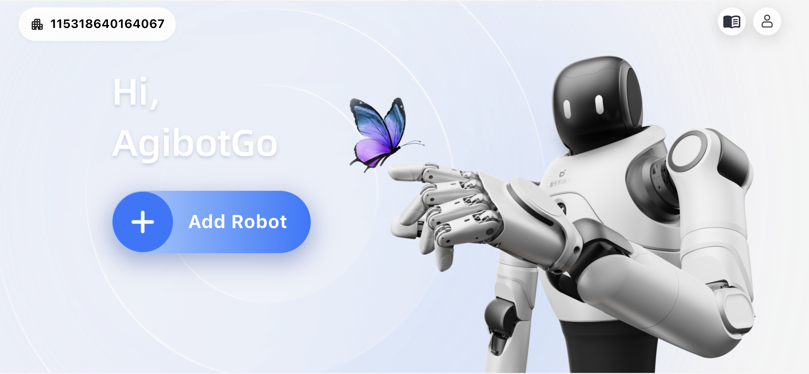
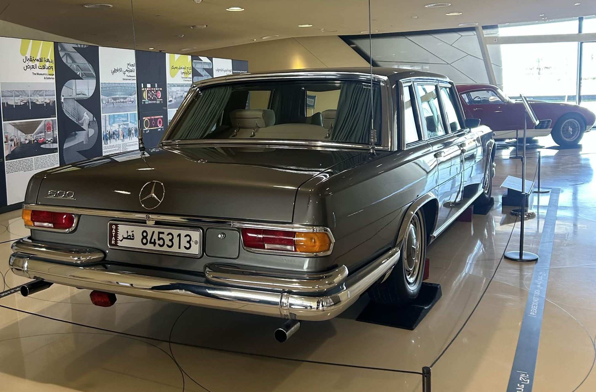

Tuesday: Signed with Qatar Museums for the internship, went to the Museum of Islamic Arts, which showed us the technology and how QM aims to increase customer interaction with the use of Technology

Wednesday: Went to Mathaf, was introduced to the team, later on demonstrated to my fellow intern on how to use and control the Robot, showed the different websites that are useful for us, and showed the different characteristics in can do.

Thursday: At 11:30, Christophe showed us around the National Museum, where it showcases how Qatar started, its natural habitats, how nature controlled the people of Qatar and how it was built. Unfortunately, Galleries 6-10 were closed and under maintenance, making it inaccessible for the other visitors and us.

Sunday: Got our emails done and have connected successfully to the wifi. Created github pages, whereas all the information of what we have done in a week will be at. Went to the National Museum again to observe the visitors and checked how much they stay in the exhibition and what they have interacted the most with.
Monday: Started the data analysis and visualization as well as the HTML of github pages. As for the data analysis assignment, I have decided to use PowerBI, as I wanted to grab this opportunity to learn a new tool that is usually used in organizations. I have started with creating graphs with using the raw dataset that was given to us interns. I cleaned up the dataset as it were showing inconsistencies within the data, and I started making the word report showing the graphs that I have made and adding a description with what I have understood. I decided to split up the report within 3 categories, Visitor Personal Study, Visitor Interaction, and Visitor Satisfaction. Visitor Personal Study shows some details of who comes to the museum, which gender they are, the age range, and if they come from Qatar or around the world. Visitor Interaction shows their interaction with the technologies that we have in the museum, while the Visitor satisfaction is how the visitor thinks of the museum.
Tuesday: Tuesday - I continued with the report that I was doing, primarily more on the Visitor Interaction. As for some graphs, I have to manually group up the categories as it was written in text from the respondents.
Some people just pass by to take pictures, mostly foreigners who do not speak english do not bother to read and just look around. Whilst some foreigners, go online to search about the valuables and translate it in their language, which takes 5 mins+ in the exhibits. Visitors who come on pairs/couples usually interact with the technology for 2-5 mins, they talk and take pictures and engage with the video exhibitions. Sometimes, the person will lead the other and the other one will just follow around, this sometimes makes people . People in a group, usually talk to the people with them while talking about the exhibit, they also engage with the interactive exhibits within 2-5 minutes. People who come by themselves usually take more time in the msueum, around 5_ mins and actaully reading the information and engaging with the screens that has more information about the artifacts, they do go section by section and try not to miss out on anything. Most people do not ask the staffs unless they are totally engage with the exhibition.